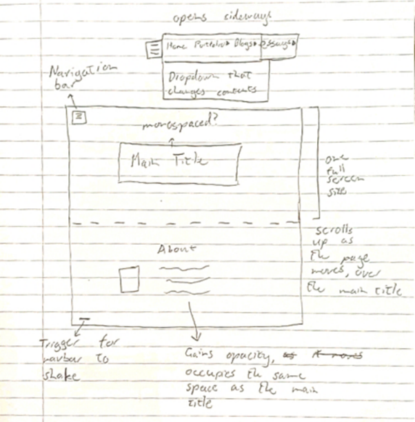
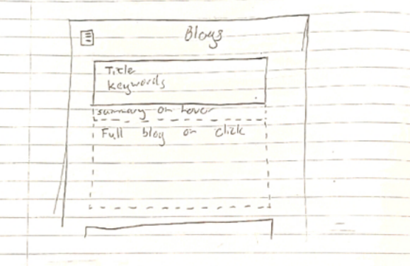
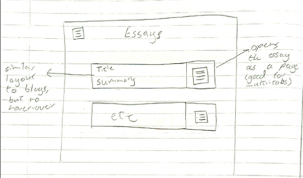
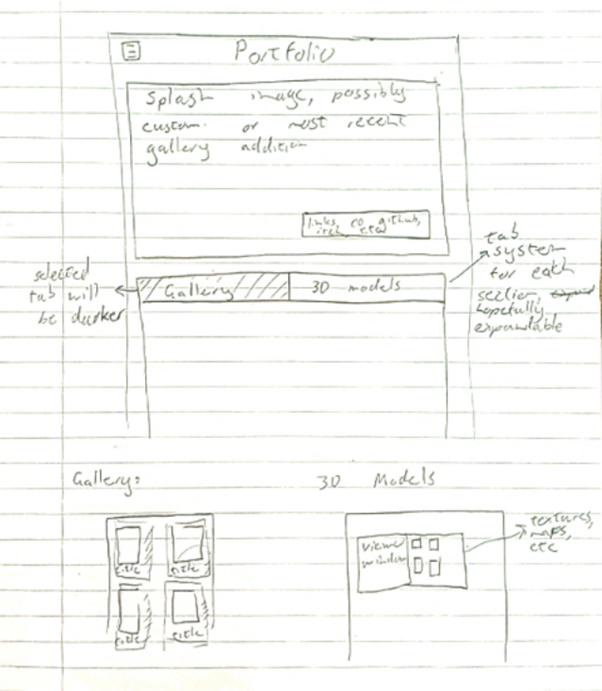

This last week, the reading that I selected was the 1950 paper by Alan Turing on the subject of artificial intelligence, the test he devised to call an AI intelligent, as well as hardware and software specifications that might be needed to create an intelligent machine.
The technical aspects of the paper are admittedly not of the greatest interest to me right now, but I think that his test is a very interesting lens of analysis to use in a modern context. For that purpose, I want to talk about two things. First, an interesting website that I found in my research that might conduct a test very similar to Turing’s, with quite fascinating results. Second, I want to analyse the emergence of bots on Twitter, why it is that we can spot them so easily, and, maybe selfishly, to speculate on why they seem so much more prevalent now than ever before.
Before anything though, I want to explain the Turing test in my understanding of what I read in the paper. I believe he first gives an example of the test conducted with all human subjects, then leads us to speculate on it with a machine replacing one of the participants. In the test, we have 3 people, a man, a woman, and an interrogator. The man, who I will call the liar, has the goal of fooling the interrogator into thinking he is not a man. The woman, who I will call the helper, wants to have her gender guessed correctly. Both are only able to communicate through text, so the only information the interrogator can use is trying to figure out which responder is lying. Turing proposes that we can replace the liar in this test with a machine, and instead of gender, the test is decided on which respondent is the AI. He suggests that at the point when one is not consistently distinguishable from the other, we can reasonably say that we have created a humanlike machine.
Now, while reading about this, I was reminded of a website I’d seen a few weeks ago, that I’ll link here: https://www.humanornot.ai . Now, unfortunately it’s since ended the experiment, but a user would be matched with either another human, or an AI bot that was running off a large language model. The goal was to correctly guess whether or not the thing that you were talking to was a human or a machine. Interestingly enough, it seems that we’re still beating guessing odds on that, so even the very advanced models that have been released recently don’t pass the Turing test. I don’t want to go too deep into the AI21 report, but it’s extremely interesting, and I’d recommend giving it a read if you can. It’s linked on the website from before.
The second thing I wanted to talk about is, well, bots on Twitter. Right now, it’s a common joke to try find them out and mess with them. I’ve seen people override prompts, catch them hallucinating, and complain about how many followers they’re gaining that are clearly not human. Truthfully, it’s difficult to say whether their sudden prevalence is related to the release of more easily accessible language models or if Elon firing 80% of his staff had a negative effect on the website. Really, it’s hard to say. But regardless, they’re here now, and they’re very obvious. I think it’s a little strange how clearly fake they are, to be honest. My theory is that it’s an old sales tactic that’s employed in spam emails and the like. The only people that you would want to draw into your scam, your fraud, or more recently, the link in your twitter bio, are the ones who aren’t put off by strange phrasing or weird behaviour.
As we navigate an AI-dominated future, we face the paradox of our technological progress. Alan Turing's legacy, seen in the Turing Test, remains a critical tool to assess AI capabilities. The experiment on human or not showcases the ongoing struggle to distinguish between humans and machines, highlighting the limitations of advanced language models. The prevalence of bots on platforms like Twitter raises ethical concerns about AI deployment. The challenge is to uphold ethical standards and discern real interaction amid the influx of algorithm-driven entities. Looking ahead, we must responsibly use AI for the benefit of humanity, recognizing that even this concluding paragraph (And only this one), discussing the complexities of our AI-driven path, was generated by artificial intelligence. Of course, my prompt could be workshopped, hammered into a shape that fits more perfectly with the rest of this blog, but I think leaving it as is highlights that we’re not free falling just yet, but we’re on the precipice of a chasm. A precipice that needs railings, desperately.
This week was spent mostly outlining the wireframes for my eventual website. I want to use this post to go in-depth on the decisions I made and the reasons for making them. I’m going to scan each wireframe into here and talk about how they’re going to work and the possible challenges that might come up with integrating them.
First is my index/homepage
Going from the top down, I would like to have a navigation bar that always stays in the corner of the screen, regardless of page or position. It will open sideways to reveal main pages, with a secondary dropdown that can be used for quicker navigation if needed. On the main screen, there will be a title which has the purpose of drawing the user in. If the user scrolls down, the second about screen will move up over the main title. As that screen comes into focus, the main title will lose opacity as the about page gains opacity, taking the place of the former main title. When the user has hit the bottom of the about page, there will be a trigger that will cause the navigation bar to grow and shake a little, reminding the user that it’s there and hopefully guiding them to click it and move to other parts of the website.
I want the blog page to look as follows:
Each blog post will be separated out into its own block, with the blog title and keywords visible. When the user hovers over a post, a short summary of the contents will appear, slightly pushing down the blogs below. When a user clicks a post, it will expand fully, showing the entire post in the box and pushing everything below it even further. While simple, I believe this system is intuitive and should lead to a good user experience.
In a similar vein, I think the essay tab should feel like the blog page but should also lead the user to an understanding of the fact that it’s longer form and more of a commitment to read.
In this layout, essays are given a title and a persistent summary that stays in place regardless of where the cursor is placed. Instead of opening as embedded text in the page, the essay will open in a new page. This is useful because it enables bookmarking in the url with hashtags, as well as being able to have it open on a separate tab. This approach should lead to a slower, more intentional reading than blog posts, which feel less commital to open.
Finally, my portfolio page will serve as an advertisement and gallery.
On the main part of the portfolio, there will be a large splash image with links to my projects and various pages. Beneath that will be the gallery section, seperated out into distinct tabs for whatever media becomes important to display. The gallery section will simply house images of paintings or renders that I’ve made, laid out quite simply to de-emphasize anything but the artwork itself. The 3D models tab will have the same design philosophy, but with a 3D viewer and a tab to look at all the separate textures and maps that were used to produce the final product.